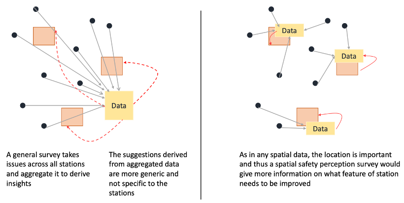
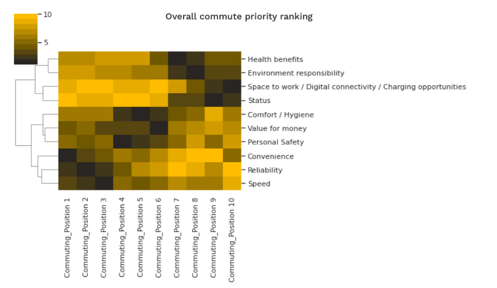

Sindhuja, who is a 2022/23 MSc UI Student at the Department of Informatics, NMES Faculty, King’s College London, had successfully completed her 10-week placement at WSP in the spring of 2023, on a data-driven project to bridge the gap between women’s safety and urban design.
The interdisciplinary project had been proposed and supported by WSP’s Future Mobility team, in recognition of the safety issues of women living in urban context. It has been realised that in the vastness of urban life, the safety of women and marginalised groups during their commutes is still a pressing issue yet to be addressed in many countries. Cities and their infrastructure designs are merely referring to aesthetics or functionality; instead it pertains more to the safety and well-being of residents, especially for women and marginalised groups who reply on public transportation to attain routine employment, education and other public services, their commuting challenges also intensified by inequalities, needless to say those vicious crimes against women happened in transport space such as tube stations. They alarmed citizens with a pondering question hovering in our mind:
“Does the design of our cities contribute to such danger and crime threat, or could it serve as a deterrent through data-informed principles to protect those vulnerable groups?”
WSP have recognised the issue, hence undertaking projects on bridging the gap between urban design and safety. In light of the majority discussions on safety domain had emphasised on urban spaces such as parks, sidewalks, and communities, it is realised that limited discussion had been explored in transit space, for example tube stations. It brought the opportunity of proposing such a placement project, enabling Sindhuja to broaden the above conversation the WSP Future Mobility team and her academic supervisor Dr Yijing Li at King’s. During the 10-week placement time (7 hours per week), Sindhuja plugged into the ongoing work at WSP’s Future Mobility team, worked on understanding the safety perception of women as a method to develop tools to reduce violence against women, especially in transportation zones like Underground stations (Daniel Quan, WSP line manager), based on Crime Prevention through Environmental Design (CPTED), and has helped shape the Safety Impact Assessment tool being successfully developed in the team.
Throughout Sindhuja's project, she focused on designing a human-centred research approach, to gain a detailed understanding and follow-up analysis of the tube station physical environment. Firstly, various elements and functional zones of a typical TfL tube station had been investigated, including entrances, elevators, gate lines, platforms, and other areas. Secondly, multiple unique environmental elements had been derived, such as lighting, advertising, etc., to relate to their potential influences on users’ feeling of safety, especially from the shoes of women and children. Thirdly, Sindhuja had been able to designe a 'spatial safety perception' (Figure 1), incorporating CPTED principles, to gain deeper insight into user conditions and safety perceptions in different environments.

Figure 1: Difference between a general perception survey and a spatial perception survey
At the earlier stage of the project, Sindhuja and the team designed a detailed survey on thoroughly understanding passengers’ safety perceptions in different areas of the tube station. But they quickly realised that participants involved in the survey would gradually lose their enthusiasm in answering the repeated questions for each target area and lose the patience if the survey is too long; in addition, there were some target areas with overlapping functions amplifying the duration and repeated questioning issue.
Upon carefully reviewing collected feedback, the survey had received optimised design, by reducing repetition and simplifying questions but still maintaining the comprehensiveness nature, hence saw a significant improvement of the response rate from the respondents. The optimised survey design has been presented in five parts on, respondents' basic information, safety evaluations of London’s Liverpool Street Station, its surrounding environment, interior facilities, and the tube lines and platforms, in the aim to fully grasp passengers' safety perceptions and needs.
The new version of improved survey stems from the passengers' perspective and be more effective in collecting their safety perceptions on the target station as a whole and specific areas. It also benefitted the student, Sindhuja, in practicing the optimisation operation; honed her skills in handling feedback, analysing, and solving problems, which are undoubtedly valuable assets for her future career.
Besides of collecting new data, WSP had provided their historical surveys data on transport-related projects for exploring. This allowed Sindhuja to gain a deeper understanding of users’ demand and expectations, to provide robust data support for the further optimisation of sustainable project delivery. Upon filtering and separating the above data, user profiles and their preferences for ten criteria, such as reliability, speed, convenience, personal safety, and cost-effectiveness when choosing commuting methods, had been framed (Figure 2), with the majority users taking personal safety as the 4th priority, only after considerations on speed, convenience, and reliability.

Figure 2 Overall commute priority of the whole aggregated dataset
In completion of the project, Sindhuja had the chance to reflect on the feedback received during the project, such as more user-friendly platforms utilisation, and sustainable and replicable projects, which has undoubtedly enriched her professional knowledge and experience beyond the university classroom with practical experience; it also was a unique opportunity allowing her to step into the real world, tackle with complicated urban problems, and contribute her knowledge and skills to crucial social topic, even to make her substantive impacts onto urban transportation safety; the education towards employment journey enabled her to comprehend the value of research in depth, especially witnessed the remarkable achievements made by herself when academic pursuit collides with real-world challenges.
As addressed in the testimonials received from the line manager at WSP:
“WSP’s partnership with Department of Informatics at King’s College London has given us the opportunity to engage with new talent and bring fresh perspectives from data-centric backgrounds. This engagement has led to the integration of emerging ideas in academia and their application in the corporate world.
Under such partnership activities, students have the opportunities to start their journey in the corporate world, to learn the industry standards, concepts and working styles which can be a useful skill in this competitive market; host partners, such as WSP’s Future Mobility team, can benefit from the diversity of skills and knowledge brought in by King’s students, as it will help in the cross-pollination of ideas from students with a strong knowledge base and training in the current technological advancements; the module supervisor and academic host department at King’s also received great communications on possibility in transferring academic outputs into industrial practices and impacts.
As commented by Daniel Quan from WSP’s Future Mobility team, the collaboration between MSc Urban Informatics programme and the company “has been beneficial in helping WSP leverage the talents and expertise of students while providing them with avenues to improve their skills in the corporate world. It has served as an important opportunity to meet and work with young talent who are enthusiastic about urban improvements and mobility solutions.”
(Editor: Jessie Sijie Tan, Yijing Li)